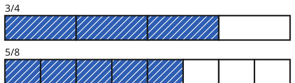

Brüche vergleichen
Mit einem KI-Tutor lernen
Ein KI-Tutor erklärt dir diese Seite und hilft dir bei den Übungen. Wähl deinen Assistenten:
Mit Claude öffnen Mit ChatGPT öffnen Mit Mistral Vibe öffnen
Du nutzt dein eigenes Konto beim Anbieter. Der Assistent ist kein Angebot von lernapps.net: lernapps liefert nur Inhalte und Übungen. Die Wahl gilt für alle Seiten, nur auf diesem Gerät.
Einstieg
Zwei gleich große Tafeln Schokolade: Anna isst ihrer Tafel, Ben isst seiner Tafel. Wer hat mehr gegessen? Das kannst du sehen, wenn du die Anteile als Bild vergleichst. Mit Rechnen geht es auch, und zwar bei jedem Paar von Brüchen.
Anschaulich erklärt

Beide Streifen sind das Ganze. Achte darauf, wie weit die Färbung reicht.
Quelle: eigene Zeichnung. Lizenz: CC-BY-4.0.Die Färbung oben reicht weiter als unten. Also ist größer als . Das schreibt man so: . Das Zeichen bedeutet „größer als“, bedeutet „kleiner als“.
Regel
Es gibt drei Fälle:
- Gleicher Nenner. Die Teile sind gleich groß. Der Bruch mit dem größeren Zähler ist größer, weil er mehr Teile hat. .
- Gleicher Zähler. Beide haben gleich viele Teile, aber die Teile sind verschieden groß. Je größer der Nenner, desto kleiner sind die Teile. Der Bruch mit dem größeren Nenner ist also der kleinere. .
- Verschiedene Nenner. Erweitere beide Brüche auf denselben Nenner. Dann gilt Fall 1.
Beispiel
3/4 und 5/8 vergleichen
Die Nenner sind verschieden. 8 ist ein Vielfaches von 4. Du erweiterst mit 2: . Jetzt haben beide den Nenner 8. Vergleiche die Zähler: . Also gilt und damit . Das passt zum Bild: Anna hat mehr gegessen.
Übung
Übung
Lösung
3/7
Beide Brüche haben Siebtel. 3 Siebtel sind weniger als 5 Siebtel.
5/7 richtige Antwort
Die Teile sind gleich groß, und 5 Teile sind mehr als 3 Teile.
Sie sind gleich groß.
Sie haben zwar denselben Nenner, aber verschiedene Zähler.
Bei gleichem Nenner entscheidet der Zähler.
Mehr dazu:
Übung
Lösung
2/9
Der Nenner 9 heißt, das Ganze ist in 9 Teile geteilt. Diese Teile sind kleiner als Fünftel.
2/5 richtige Antwort
Fünftel sind größer als Neuntel, und beide Brüche haben 2 Teile.
Sie sind gleich groß.
Die Zähler sind gleich, aber die Teile sind verschieden groß.
Bei gleichem Zähler ist der Bruch mit dem kleineren Nenner der größere, weil seine Teile größer sind.
Mehr dazu:
Übung
Lösung
Das hieße, 1/2 ist kleiner als 3/8. Erweitere 1/2 mit 4, dann siehst du es.
richtige Antwort
1/2 = 4/8, und 4/8 ist größer als 3/8.
1/2 ist 4/8. Das ist nicht 3/8.
Erweitere 1/2 mit 4 auf 4/8. Dann vergleichst du die Zähler 4 und 3.
Mehr dazu:
Übung
Lösung
Erweitere 3/4 mit 2. Dann hat es dieselben Teile wie 6/8.
Erweitere 3/4 mit 2. Dann hat es dieselben Teile wie 6/8.
richtige Antwort
3/4 mit 2 erweitert ist 6/8. Es ist derselbe Anteil.
Beim Erweitern bleibt der Anteil gleich. 3/4 und 6/8 sind gleich groß.
Mehr dazu:
Übung
Lösung
Anna
Anna hat 3/5 = 6/10 gegessen. Das ist weniger als 7/10.
Ben richtige Antwort
3/5 = 6/10, und 7/10 ist mehr als 6/10.
Beide gleich viel
3/5 ist 6/10, nicht 7/10.
Erweitere 3/5 mit 2 zu 6/10. Dann vergleichst du 6/10 und 7/10.
Mehr dazu:
Übung
Drei Beispielaufgaben, jede mit ihrer Lösung:
Aufgabe Nr. 1
Du willst und vergleichen. Auf welchen Nenner erweiterst du beide? Nimm den kleinsten, der geht.
Tipp
Ist ein Nenner ein Vielfaches des anderen?
Lösung
- 12 ist ein Vielfaches von 4.
- Du erweiterst so, dass der Nenner 12 wird. Der gemeinsame Nenner ist 12.
Richtige Antwort: 12
Aufgabe Nr. 2
Du willst und vergleichen. Auf welchen Nenner erweiterst du beide? Nimm den kleinsten, der geht.
Tipp
Ist ein Nenner ein Vielfaches des anderen?
Lösung
- 10 ist ein Vielfaches von 5.
- Du erweiterst so, dass der Nenner 10 wird. Der gemeinsame Nenner ist 10.
Richtige Antwort: 10
Aufgabe Nr. 3
Du willst und vergleichen. Auf welchen Nenner erweiterst du beide? Nimm den kleinsten, der geht.
Tipp
Ist ein Nenner ein Vielfaches des anderen?
Lösung
- 10 ist ein Vielfaches von 5.
- Du erweiterst so, dass der Nenner 10 wird. Der gemeinsame Nenner ist 10.
Richtige Antwort: 10
Übung
Drei Beispielaufgaben, jede mit ihrer Lösung:
Aufgabe Nr. 1
Du erweiterst auf den Nenner 8. Wie heißt der neue Zähler?
Tipp
Mit welcher Zahl musst du den Nenner malnehmen, um 8 zu bekommen?
Lösung
- 2 · 4 = 8, also wird mit 4 erweitert.
- Neuer Zähler: 1 · 4 = 4.
Richtige Antwort: 4
Aufgabe Nr. 2
Du erweiterst auf den Nenner 12. Wie heißt der neue Zähler?
Tipp
Mit welcher Zahl musst du den Nenner malnehmen, um 12 zu bekommen?
Lösung
- 6 · 2 = 12, also wird mit 2 erweitert.
- Neuer Zähler: 5 · 2 = 10.
Richtige Antwort: 10
Aufgabe Nr. 3
Du erweiterst auf den Nenner 9. Wie heißt der neue Zähler?
Tipp
Mit welcher Zahl musst du den Nenner malnehmen, um 9 zu bekommen?
Lösung
- 3 · 3 = 9, also wird mit 3 erweitert.
- Neuer Zähler: 1 · 3 = 3.
Richtige Antwort: 3
Übung
Lösung
Richtige Antwort: Die Aussage stimmt nicht.
Ein größerer Nenner heißt kleinere Teile. Bei gleich vielen Teilen ist der Bruch dann kleiner.
Mehr dazu:
Übung
Lösung
Richtige Antwort: Die Aussage stimmt.
Beim Erweitern bleibt der Anteil gleich. Mit gleichem Nenner entscheidet dann der Zähler.
Mehr dazu: